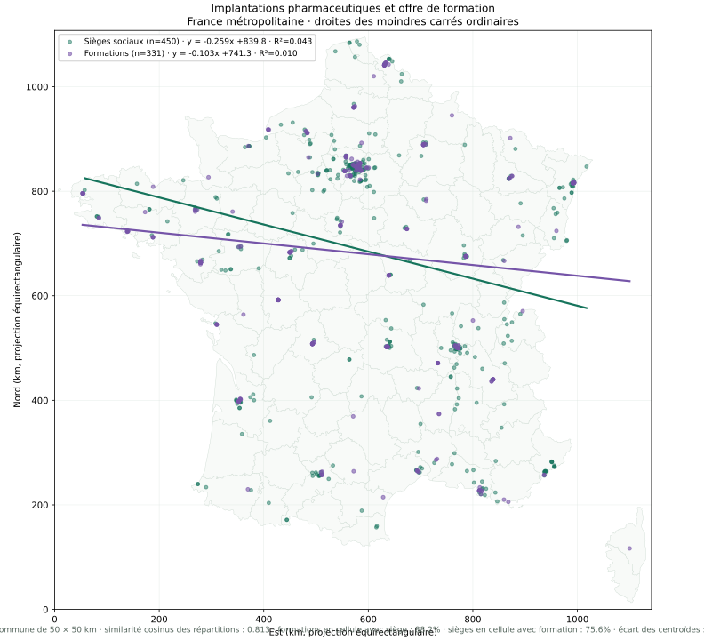

Analyse spatiale · France métropolitaine
Les formations suivent-elles les entreprises ?
Les deux droites résument la tendance géographique des sièges sociaux pharmaceutiques et des formations ciblées à partir de leurs coordonnées.
L’analyse porte sur les sièges sociaux géolocalisés, pas sur les sites industriels. Elle exclut les coordonnées hors des limites de la France métropolitaine utilisées par la carte.
Régressions linéaires
Deux tendances, une même carte


Comment lire le résultat
Une droite n’est pas une carte de densité
Une pente et un R² proches indiquent des tendances directionnelles semblables, mais ne démontrent pas une répartition homogène. Le graphique ajoute donc une similarité cosinus des effectifs par cellules communes de 50 × 50 km et la part des observations de chaque groupe située dans une cellule contenant l’autre groupe. Ces indicateurs sont sensibles à la taille de cellule et ne tiennent pas compte de la population ni du nombre d’emplois par territoire.
La projection est équirectangulaire, avec correction de longitude à la latitude moyenne métropolitaine. Les régressions sont calculées avec scikit-learn, selon l’approche de régression linéaire présentée dans le cours de machine learning de Vincent Barra.